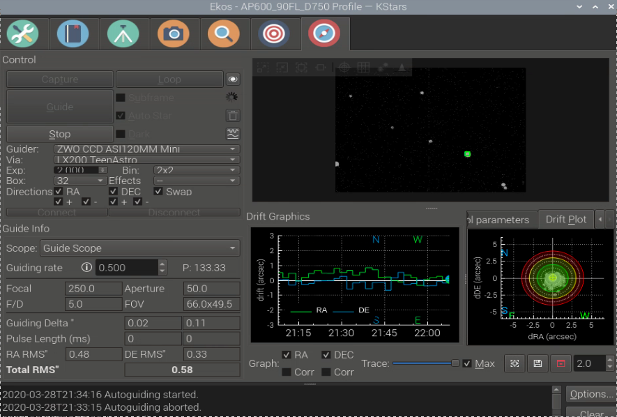

TeenAstro with Ekos
Ekos is documented here.
This gives some detail on its operation with TeenAstro
Connection options
KStars / Ekos runs either on a PC, Mac or on a Raspberry Pi. The connection between this device and TeenAstro is done either through Serial / USB (the Telescope port on the main unit), or through Wifi to the Smart HandController (SHC), port 9999 (IP address depends on the network). When running through Wifi, the SHC requires a firmware version that allows permanent IP connections with the “One to One” Wifi menu option (SHC version 1.2b or above).
Note: I found that, for visual use, both methods are fine, but for astrophotography the serial port is more reliable than Wifi (especially for guiding).
Another choice is which computer runs Ekos, and how it is controlled. To reduce the number of cables, I chose to run it on a Raspberry Pi 4 attached the mount dovetail. I control the Pi 4 remotely via the excellent NoMachine free remote desktop application.

Goto
To control remotely the mount, start Kstars, launch Ekos from the Tool menu. Click on the Mount tab. You get this screen:
Click on Mount Control to set the slew speed, select a target, and move in all directions:
Guiding
For long exposure astrophotography, the mount must track the stars precisely. To compensate polar alignment errors and refraction effects, we need to guide, by using a guide camera and software (PHD2 or Ekos Guide Module) running on a computer to correct the mount movement. The signals can be either electrical impulsions through an ST4 cable, or software commands from computer to mount (no need for ST4 cable between camera and mount). To select the software mode, enable "Pulse Guiding" in the TeenAstro INDI control panel. As noted above, guiding is more reliable with the serial port. For the time being, don't use Wifi for guiding.
Other important options in the Guide tab of the control panel are:
- Exposure time. I use 1 or 2 seconds.
- Guiding rate. I found that 0.5x works best on my setup.
- Bin: 2x2 in the Guide Module tab.

If you use the Ekos guide module, keep the suggested control parameters (proportional and integral gains).
With these settings, in the best case (with excellent seeing) I obtain a guiding error of between 0.5 arc-second and 1 arc-second RMS with my setup (250mm focal length guide scope, ASI120mini camera, AP600 mount)
PHD2 vs. Ekos internal guiding
Both work. I did not notice significant differences in precision, but I found it easier to use the internal Ekos guiding module (no need to start an external program).
Meridian Flip
All German Equatorial mounts need to switch from east to west when imaging past the meridian. This is called the Meridian Flip and Ekos provides a way to do this automatically during a session. Here are the steps:
- Determine the "Past Meridian Mount Limit" of your mount, ie the angle it can continue tracking past the meridian without the telescope hitting the pier.
- Program this limit in the mount via the handset or Wifi interface
- In the Ekos mount tab, check the box "Flip if HA>" and enter the same value minus one degree than the TeenAstro limit. For example, if the TeenAstro limit is 10 degrees, enter 9 degrees in Ekos.
Start your photo session. When Ekos detects that the next capture will get close to the limit, it initiates a GOTO to the current target. TeenAstro will perform the flip automatically. In some cases, TeenAstro decides it is not close enough, then Ekos will reschedule it after the next exposure. When the flip is done, Ekos restarts the photo session, after eventually performing an astrometry session to re-center the image (if programmed in the scheduler).
Note : The current Ekos official release (January 2022) has a bug that prevents the meridian flip timer from operating. The fix is identified and should be implemented soon.
Error handling
When the telescope is tracking and moves past one of the defined limits, it stops tracking and does not execute any GOTO commands. On the SHC, an icon appears to show the limit. When it is controlled by Ekos, it shows the message in the Main tab of the TeenAstro INDI control panel.
In both cases, the procedure to recover is the same: use the arrows (physical buttons on the SHC, or virtual buttons on Ekos) to move the mount back in the safe zone. As soon as the error message disappears, normal operation can resume.
Using TeenAstro without the hand controller
It is perfectly possible to use this configuration, for example in a fixed pier situation where the mount does not move between uses. The whole functionality is controlled entirely by Ekos on the remote computer. Obviously in this case only a serial connection is possible, since the Wifi module is no longer available. (It is in the SHC).